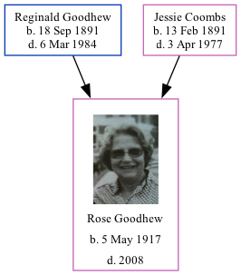

Rose May Goodhew 1917 - 2008
[ Home ] | [ Calendar ] | [ Surnames Index ] | [ Family History ]The 2nd of 4 children of Reginald Goodhew (an aircraft fitter) and Jessie Coombs (a cook), Rose Goodhew, the third cousin once-removed on the mother's side of Nigel Horne, was born in Doncaster, South Yorkshire, England on May 5, 19171.
She died in 2008.
Parents
- Reginald Arthur was born on Sep 18, 1891
- Jessie May was born on Feb 13, 1891
Citations
- England & Wales births 1837-2006 - Findmypast
Media
Rose Goodhew
England & Wales births 1837-2006 - BMD/B/1917/2/AZ/000474/088
Family Tree
Generated by Ged2Site. Last updated on Jul 20, 2025